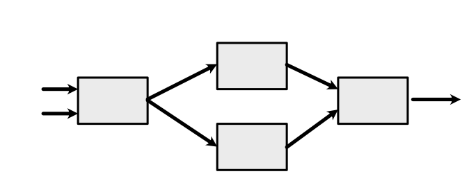
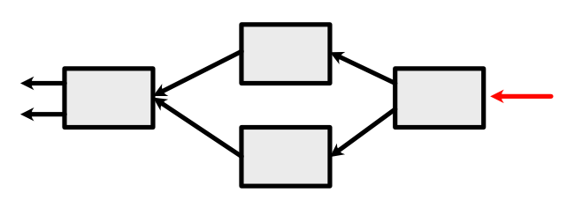
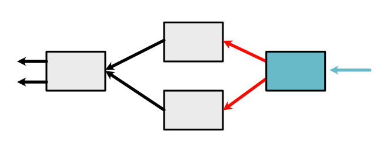
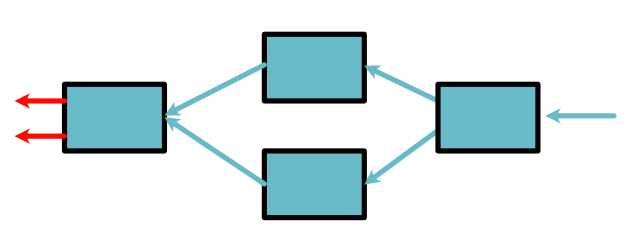
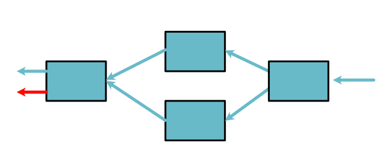

Backpropagate¶
The backward function tells us how to compute the derivative of one operation. The chain-rule tells us how to the derivative of two sequential operations. In this section we show how to use these to compute the derivative for an arbitrary series of operations.
The underlying approach we will use is a Breadth-First Search over the computation graph constructed by Variables and Functions. Before going over the algorithm though, let's work through a specific example step by step.
Example¶
Assume we have variables \(x,y\) and a function \(h(x,y)\). We want to compute the derivatives \(h'_x(x, y)\) and \(h'_y(x, y)\).
Here we are assuming x, +, log, and exp are all implemented as ScalarFunctions and store their history. This means that the final variable has constructed a graph of its history that looks like this:
Here, starting from the left, the arrows represent variables \(x,y\), then \(z, z\), then \(\log(z), \exp(z)\), and finally \(h(x, y)\). Forward computation proceeds left-to-right.
The chain rule tells us how to compute the derivatives. We need to apply the backward functions right-to-left until we reach the original variables, which we call leaf variables. We do this by maintaining a queue of active variables to process. At each step we pull a variable off the queue, apply the chain rule to the last Function that acted on it, and then put its inputs into the queue.
We start with only the last variable \(h(x,y)\) in the queue. Its derivative is by default 1.
We then process it with the chain rule. This calls the backward function of +, and produces two new variables on the queue (which correspond to \(\log(z), \exp(z)\) from the forward pass).
The next element on the queue is the top arrow. We pass its derivative as \(d_out\) to chain rule, which adds a new arrow (corresponding to \(z\)) to the queue.

The next element on the queue is the top arrow. Here we have an interesting result. We have a new arrow, but it corresponds to the same variable which is already in the queue. We can apply an optimization, and simply add it derivative to the derivative computed at the last step. This means there is only one arrow to process.

At this point, all that is left on the queue is our leaf variables.
We then pull a variable from the queue that represents an orginal leaf node, \(x\).
Finally we pull an arrow from the queue that represents an original leaf node (\(x\)).
Since each step of this process was an application of the chain rule, we can show that this final value
is \(h'_x(x, y)\). The next step of the algorithm would then produce \(h'_y(x, y)\). By convention, if \(x, y\) are instances of minitorch.Variable, these are stored as
x.derivative, y.derivative
Algorithm¶
This algorithm is an instance of breadth-first search a classic graph algorithm.
Here each of the red arrows is represented by an object minitorch.VariableWithDeriv, that stores the Variable and its current derivative (what gets passed to \(d_{out}\) in chain rule). Starting from the last arrow, which is passed in as an argument, backpropagate should run the following algorithm.
Initialize a queue with the final variable+derivative.
While the queue is not empty, pull a variable+derivative from the queue.
If the variable is a leaf then add its final derivative (_add_deriv) and loop to (1).
If the variables is not a leaf call .chain_rule on the last function that created it with derivative as \(d_{out}\).
Loop through all the variables+derivative produced by the chain rule.
If the variable is in the queue (check .name), add to its current derivativ
Otherwise, add to the queue.
Important note. Only leaf variables should ever have non-None .derivative value. All the intermediate variables should only keep their current derivative value in the queue.